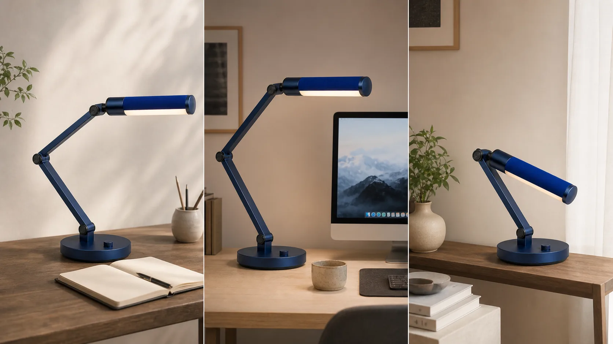
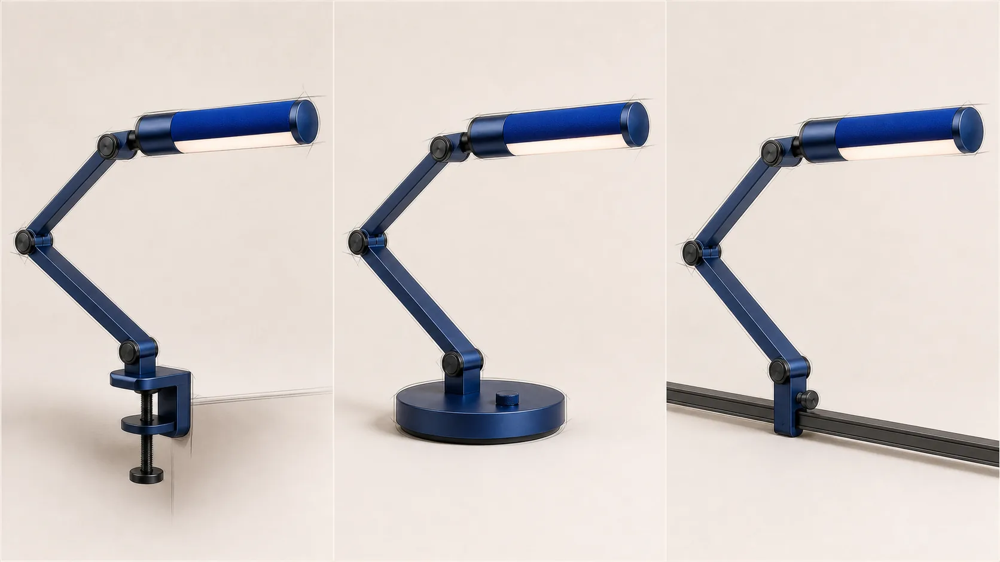
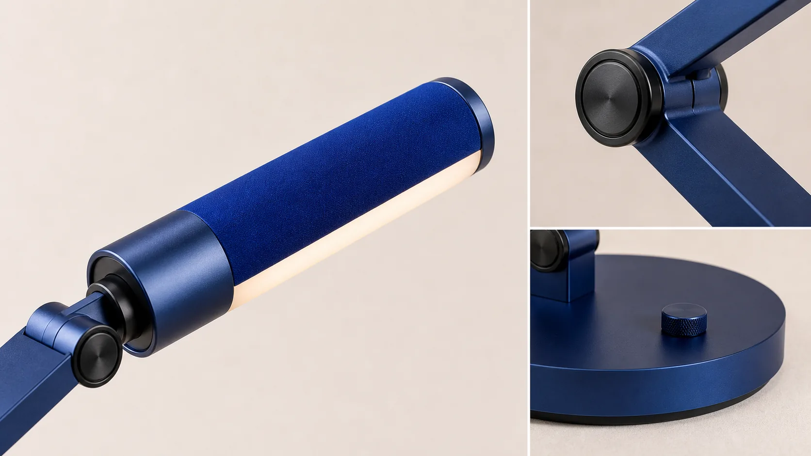
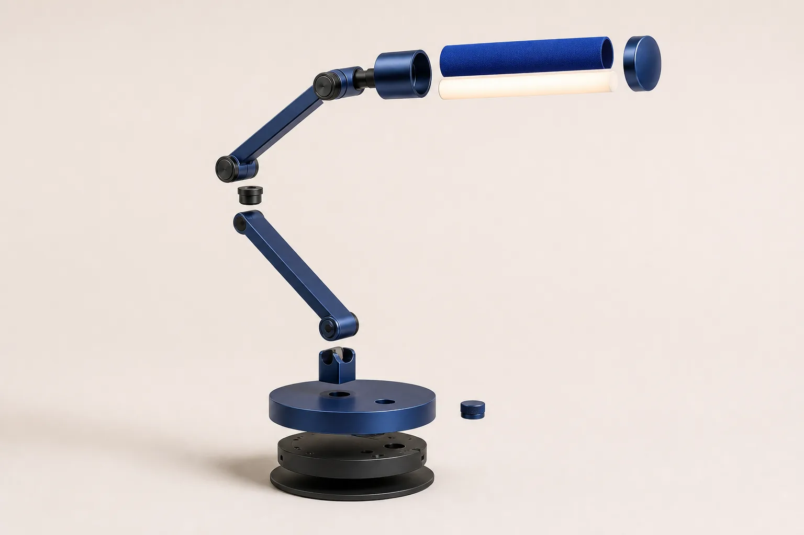
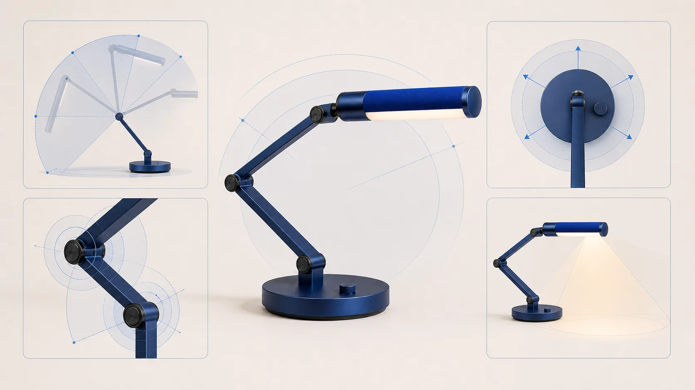
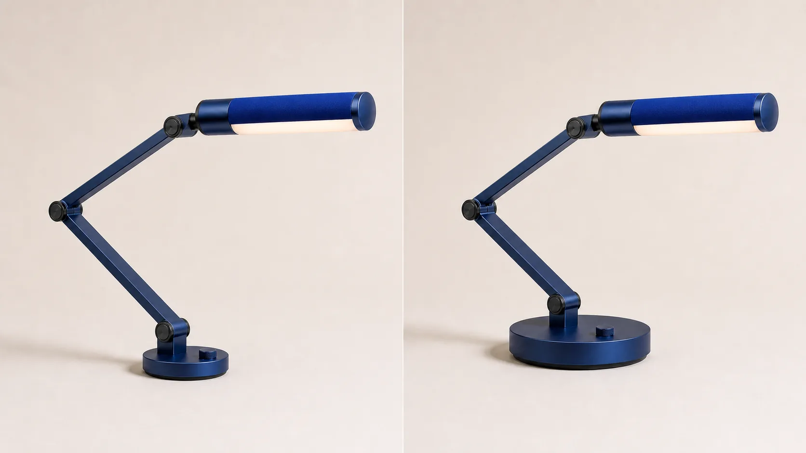
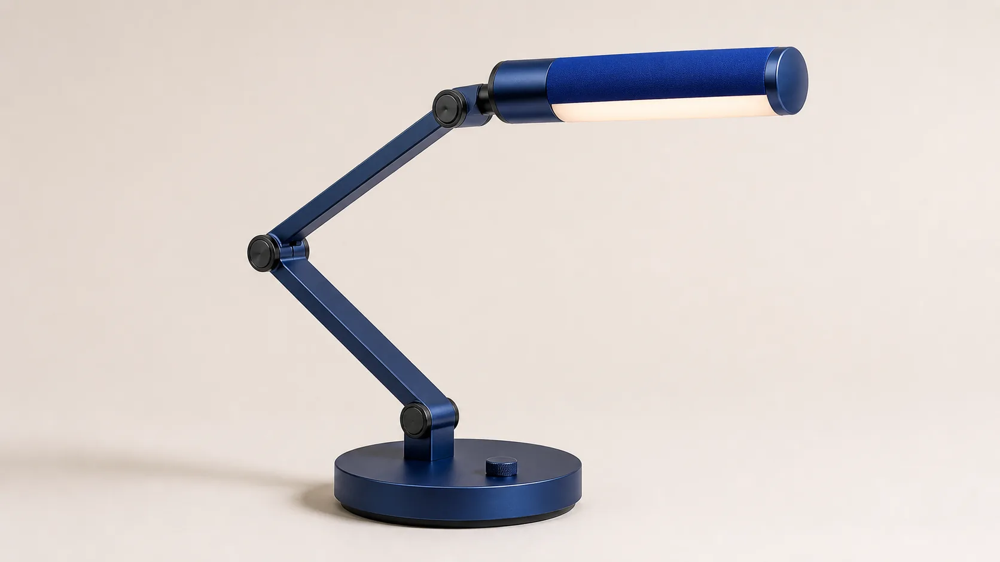

INDUSTRIAL DESIGN · FICTIONAL SKILL SHOWCASE
Evidence before aesthetics.
Modular Desk Lamp
A demonstration of how the Skill separates concept intent, generated imagery, assumptions, and engineering proof.
PROJECT 01 · CONCEPT PROPOSITION
01
A light that changes role, not identity.
Concept intent: one repairable platform for task light, call light, and compact storage.
E0 · Fictional demonstration · To validate
PROJECT 01 · BRIEF
Reduce replacement by separating what wears, moves, and emits light.
Assumption: people working in compact home spaces.
Fictional concept direction and portfolio demonstration.
Illustrative case; no real project timeline.
Small footprint, reach, stability, service access.
SYNTHETIC SCENARIOS
Three behaviors to investigate—not findings.

AI-assisted concept visualization · Not research evidence
PROVISIONAL INSIGHT · TO VALIDATE
The light source may need to move between modes while the base stays familiar.
This is a design hypothesis derived from synthetic scenarios—not an observed user need.
CONCEPT DIVERGENCE
Change the architecture, preserve the product language.

AI-assisted concept visualization · Not engineering evidence
ILLUSTRATIVE DECISION
Why carry the weighted-base route forward?
| Route | Portable | Desk access | Service path | Status |
|---|---|---|---|---|
| A · Clamp | Low | High | Medium | Hold |
| B · Base | High | Medium | High | Explore |
| C · Rail | Medium | High | Medium | Hold |
Concept decision: explore Route B because it makes the modular promise legible without requiring desk hardware. Criteria remain assumptions until tested.
FORM · CMF
Make adjustment feel precise, not mechanical.

Deep navy anchors the structure. A cobalt textile-like sleeve makes the replaceable light module visible. Warm opal light softens the technical geometry.
Concept CMF only · No material approval or supplier validation
AI-assisted concept visualization · Not CMF approval
CONCEPTUAL ARCHITECTURE
Separate the modules that age differently.

Replaceable head, sleeve, diffuser.
Two arms with cylindrical joints.
Base-contained concept module.
Access path to validate with engineering.
AI-assisted concept visualization · Not engineering evidence
VALIDATION PLAN · NO RESULTS
Four questions for the first physical rig.

Can the head cover intended work zones?
What base mass resists tipping?
What joint torque feels controlled?
Which diffuser and angle protect sight lines?
AI-assisted validation-plan illustration · Not test evidence
ILLUSTRATIVE ITERATION
A proposed stability response—not a measured improvement.

To validate: build matched rigs, document mass and reach, then measure the tipping boundary.
AI-assisted concept visualization · No physical test performed
FINAL CONCEPT RESOLUTION
One platform. Three possible modes. Many unanswered questions.

AI-assisted concept visualization · Not engineering evidence
REFLECTION
The portfolio is honest when uncertainty stays visible.
A coherent modular concept and a clear validation agenda.
User value, ergonomics, optics, thermal behavior, cost, and assembly.
Research, functional rigs, photometric tests, and engineering review.
A polished image can explain intent. It cannot raise an E0 assumption into evidence.
INDUSTRIAL-DESIGN-PORTFOLIO SKILL
Show the judgment. Label the unknowns.
Fictional demonstration
truman-t3 / industrial-design-portfolio-skill
Public Skill Showcase · Not engineering evidence